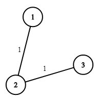

| Category | Difficulty | Likes | Dislikes |
|---|---|---|---|
| Algorithms | Hard | 1202 | 40 |
union-find | graph | heap-priority-queue | minimum-spanning-tree
google
There are n houses in a village. We want to supply water for all the houses by building wells and laying pipes.
For each house i, we can either build a well inside it directly with cost wells[i - 1] (note the -1 due to 0-indexing), or pipe in water from another well to it. The costs to lay pipes between houses are given by the array pipes where each pipes[j] = [house1j, house2j, costj] represents the cost to connect house1j and house2j together using a pipe. Connections are bidirectional, and there could be multiple valid connections between the same two houses with different costs.
Return the minimum total cost to supply water to all houses.
Example 1:

Input: n = 3, wells = [1,2,2], pipes = [[1,2,1],[2,3,1]]
Output: 3
Explanation: The image shows the costs of connecting houses using pipes.
The best strategy is to build a well in the first house with cost 1 and connect the other houses to it with cost 2 so the total cost is 3.Example 2:
Input: n = 2, wells = [1,1], pipes = [[1,2,1],[1,2,2]]
Output: 2
Explanation: We can supply water with cost two using one of the three options:
Option 1:
- Build a well inside house 1 with cost 1.
- Build a well inside house 2 with cost 1.
The total cost will be 2.
Option 2:
- Build a well inside house 1 with cost 1.
- Connect house 2 with house 1 with cost 1.
The total cost will be 2.
Option 3:
- Build a well inside house 2 with cost 1.
- Connect house 1 with house 2 with cost 1.
The total cost will be 2.
Note that we can connect houses 1 and 2 with cost 1 or with cost 2 but we will always choose the cheapest option.
Constraints:
2 <= n <= 104wells.length == n0 <= wells[i] <= 1051 <= pipes.length <= 104pipes[j].length == 31 <= house1j, house2j <= n0 <= costj <= 105house1j != house2j